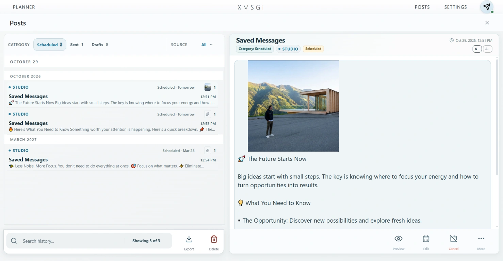

Text formatting
Use the available formatting tools to make headings and important parts easier to scan.
Telegram publishing workspace
Write a message, format its text, attach an image or supported media, and review how the post will look before sending it with XMSGi Studio.
Text and media together
The workflow is straightforward: prepare the content, inspect the visual result, and decide when it should be sent.
Use the available formatting tools to make headings and important parts easier to scan.
Add an image or another supported media file and review it alongside the message.
Check how text and media fit together before sending the post to Telegram.
Inside the app


A simple workflow
Shape the message in the editor and make its structure clear.
Attach your media and check the post in the preview.
Send immediately or set a date and time for delivery.